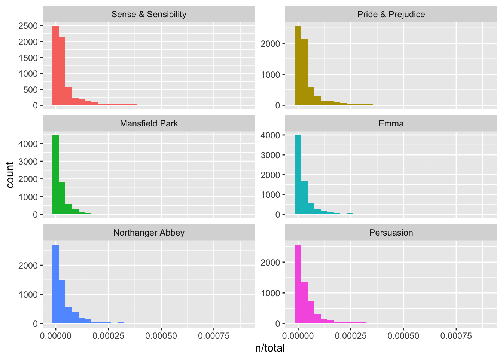

Chapter 4 TDF-IDF
4.1 Chapter Take Away
Take away
Term frequency:
tf
idf
td_idf: tf-idf measure how important a word is to a document in a collection (or corpus) of documents, for example, to one novel in a collection of novels or to one website in a collection of websites
Using term frequency and inverse document frequency allows us to find words that are characteristic for one document within a collection of documents, whether that document is a novel or physics text or webpage. Exploring term frequency on its own can give us insight into how language is used in a collection of natural language, and dplyr verbs like count() and rank() give us tools to reason about term frequency. The tidytext package uses an implementation of tf-idf consistent with tidy data principles that enables us to see how different words are important in documents within a collection or corpus of documents.
4.2 The tidy text format
One of the question in text mining and NLP is to find out what a document is about.
Can we do this by looking at the words that make up the document? One measure of how important a word may be is its term frequency (tf), which shows how frequently a word occurs in a document. But, there may be some words that appears many times but may not be important; in English, these are probably words like “the”, “is”, “of”, and so forth.
We might think removing stop words in analysis, but stop words sometimes have more important than other words. Removing list of stop words is not a very sophisticated approach to adjusting term frequency for commonly used words.
The common approach is to look at a term’s inverse document frequency (idf) - which decreases the weight for commonly used words and increases the weight for words that are not used very much in a collection of documents. This can be combined with term frequency to calculate a term’s tf-idf (the two quantities multiplied together), the
frequency of a term adjusted for how rarely it is used.
The statistic tf-idf is intended to measure how important a word is to a document in a collection (or corpus) of documents, for example, to one novel in a collection of novels or to one website in a collection of websites
It is a rule-of-thumb or heuristic quantity; while it has proved useful in text mining, search engines, etc., its theoretical foundations are considered less than firm by information theory experts
We can use tidy data principle, to perform tf-idf analysis to quantify how important various terms are in a document that is part of a collection.
3.1 Term frequency in Jane Austen’s novels
Let us find term frequency and then tf-idf of Jane Austen novels.
book_words <- austen_books() %>%
unnest_tokens(word, text) %>%
count(book, word, sort = TRUE)
book_words## # A tibble: 40,379 x 3
## book word n
## <fct> <chr> <int>
## 1 Mansfield Park the 6206
## 2 Mansfield Park to 5475
## 3 Mansfield Park and 5438
## 4 Emma to 5239
## 5 Emma the 5201
## 6 Emma and 4896
## 7 Mansfield Park of 4778
## 8 Pride & Prejudice the 4331
## 9 Emma of 4291
## 10 Pride & Prejudice to 4162
## # … with 40,369 more rows## `summarise()` ungrouping output (override with `.groups` argument)## # A tibble: 6 x 2
## book total
## <fct> <int>
## 1 Sense & Sensibility 119957
## 2 Pride & Prejudice 122204
## 3 Mansfield Park 160460
## 4 Emma 160996
## 5 Northanger Abbey 77780
## 6 Persuasion 83658## Joining, by = "book"## # A tibble: 40,379 x 4
## book word n total
## <fct> <chr> <int> <int>
## 1 Mansfield Park the 6206 160460
## 2 Mansfield Park to 5475 160460
## 3 Mansfield Park and 5438 160460
## 4 Emma to 5239 160996
## 5 Emma the 5201 160996
## 6 Emma and 4896 160996
## 7 Mansfield Park of 4778 160460
## 8 Pride & Prejudice the 4331 122204
## 9 Emma of 4291 160996
## 10 Pride & Prejudice to 4162 122204
## # … with 40,369 more rowsNow, for each word we have its total in the book and total number of words in the book. Look at those with highest n, they seems to be the stop words like the, to, and, of, etc.
4.2.0.1 Term frequency
let’s look at the distribution of n/total for each novel, the number of times a word appears in a novel divided by the total number of terms (words) in that novel. This is exactly what term frequency is.
library(ggplot2)
ggplot(book_words, aes(n/total, fill = book)) +
geom_histogram(show.legend = FALSE) +
xlim(NA, 0.0009) +
facet_wrap(~book, ncol = 2, scales = "free_y")## `stat_bin()` using `bins = 30`. Pick better value with `binwidth`.## Warning: Removed 896 rows containing non-finite values (stat_bin).## Warning: Removed 6 rows containing missing values (geom_bar).
Term frequency in the table:
## # A tibble: 40,379 x 5
## book word n total term_fre
## <fct> <chr> <int> <int> <dbl>
## 1 Mansfield Park the 6206 160460 0.0387
## 2 Mansfield Park to 5475 160460 0.0341
## 3 Mansfield Park and 5438 160460 0.0339
## 4 Emma to 5239 160996 0.0325
## 5 Emma the 5201 160996 0.0323
## 6 Emma and 4896 160996 0.0304
## 7 Mansfield Park of 4778 160460 0.0298
## 8 Pride & Prejudice the 4331 122204 0.0354
## 9 Emma of 4291 160996 0.0267
## 10 Pride & Prejudice to 4162 122204 0.0341
## # … with 40,369 more rows3.2 Zipf’s law
Given a large corpus of natural language occurrences, the frequency of any word is inversely proportional to its rank in frequency table.
The plots we obtain in the previous section agree whith Zips law.
The larger the word, the more we use it.The smaller the word, the more uncommon it is.
A very good explanation on Zips law is here
What is astonishing is that this law holds true for almost all huge natural language corpus’s out there.For eg : Books,Religious scripts even temperature trends over past years etc. If you have made this far you might be wondering what makes this simple mathematical law based on language patterns so special.Actually significant part of research done by mankind shows that zipf’s law appear almost everywhere
I will apply Zips Law in Hausa Language here:
Now, we can examine Zipf’s law for Jane Austen’s novels with just a few lines of dplyr functions.
freq_by_rank <- book_words %>%
group_by(book) %>%
mutate(rank = row_number(),
`term frequency` = n/total)
freq_by_rank## # A tibble: 40,379 x 7
## # Groups: book [6]
## book word n total term_fre rank `term frequency`
## <fct> <chr> <int> <int> <dbl> <int> <dbl>
## 1 Mansfield Park the 6206 160460 0.0387 1 0.0387
## 2 Mansfield Park to 5475 160460 0.0341 2 0.0341
## 3 Mansfield Park and 5438 160460 0.0339 3 0.0339
## 4 Emma to 5239 160996 0.0325 1 0.0325
## 5 Emma the 5201 160996 0.0323 2 0.0323
## 6 Emma and 4896 160996 0.0304 3 0.0304
## 7 Mansfield Park of 4778 160460 0.0298 4 0.0298
## 8 Pride & Prejudice the 4331 122204 0.0354 1 0.0354
## 9 Emma of 4291 160996 0.0267 4 0.0267
## 10 Pride & Prejudice to 4162 122204 0.0341 2 0.0341
## # … with 40,369 more rowsThe rank column here tells us the rank of each word within the frequency table; the table was already ordered by n so we could use row_number() to find the rank. Then, we can calculate the term frequency in the same way we did before.
Zipf’s law is often visualized by plotting rank on the x-axis and term frequency on the y-axis, on logarithmic scales. Plotting this way, an inversely proportional relationship will have a constant, negative slope.
freq_by_rank %>%
ggplot(aes(rank, `term frequency`, color = book)) +
geom_line(size = 1.1, alpha = 0.8, show.legend = FALSE) +
scale_x_log10() +
scale_y_log10()We see that all six of Jane Austen’s novels are similar to each other, and that the relationship between rank and frequency does have negative slope
3.3 The bind_tf_idf function
The idea of tf-idf is to find the important words for the content of each document by decreasing the weight for commonly used words and increasing the weight for words that are not used very much in a collection or corpus of documents.
Calculating tf-idf attempts to find the words that are important (i.e., common) in a text, but not too common
The bind_tf_idf function in the tidytext package takes
- a tidy text dataset as input with one row per token (term), per document.
- One column (word here) contains the terms/tokens,
- one column contains the documents (book in this case), and
- the last necessary column contains the counts, how many times each document contains each term (n in this example).
## # A tibble: 40,379 x 8
## book word n total term_fre tf idf tf_idf
## <fct> <chr> <int> <int> <dbl> <dbl> <dbl> <dbl>
## 1 Mansfield Park the 6206 160460 0.0387 0.0387 0 0
## 2 Mansfield Park to 5475 160460 0.0341 0.0341 0 0
## 3 Mansfield Park and 5438 160460 0.0339 0.0339 0 0
## 4 Emma to 5239 160996 0.0325 0.0325 0 0
## 5 Emma the 5201 160996 0.0323 0.0323 0 0
## 6 Emma and 4896 160996 0.0304 0.0304 0 0
## 7 Mansfield Park of 4778 160460 0.0298 0.0298 0 0
## 8 Pride & Prejudice the 4331 122204 0.0354 0.0354 0 0
## 9 Emma of 4291 160996 0.0267 0.0267 0 0
## 10 Pride & Prejudice to 4162 122204 0.0341 0.0341 0 0
## # … with 40,369 more rowsFrom the above table, we can see that the tf-idf are zero for these extremely common words. So the idf term (which will then be the natural log of 1) is zero.
The inverse document frequency (and thus tf-idf) is very low (near zero) for words that occur in many of the documents in a collection; this is how this approach decreases the weight for common words.
The inverse document frequency will be a higher number for words that occur in fewer of the documents in the collection.
Let’s look at terms with high tf-idf in Jane Austen’s works.
## # A tibble: 40,379 x 7
## book word n term_fre tf idf tf_idf
## <fct> <chr> <int> <dbl> <dbl> <dbl> <dbl>
## 1 Sense & Sensibility elinor 623 0.00519 0.00519 1.79 0.00931
## 2 Sense & Sensibility marianne 492 0.00410 0.00410 1.79 0.00735
## 3 Mansfield Park crawford 493 0.00307 0.00307 1.79 0.00551
## 4 Pride & Prejudice darcy 373 0.00305 0.00305 1.79 0.00547
## 5 Persuasion elliot 254 0.00304 0.00304 1.79 0.00544
## 6 Emma emma 786 0.00488 0.00488 1.10 0.00536
## 7 Northanger Abbey tilney 196 0.00252 0.00252 1.79 0.00452
## 8 Emma weston 389 0.00242 0.00242 1.79 0.00433
## 9 Pride & Prejudice bennet 294 0.00241 0.00241 1.79 0.00431
## 10 Persuasion wentworth 191 0.00228 0.00228 1.79 0.00409
## # … with 40,369 more rowsIn the above, we see that all are proper nouns, names that are in fact important in these novels. None of them occur in all of novels, and they are important, characteristic words for each text within the corpus of Jane Austen’s novels.
Note: Some of the values for idf are the same for different terms because there are 6 documents in this corpus and we are seeing the numerical value for ln(6/1),(6/2)
Let’s look at a visualization for these high tf-idf words in Figure 3.4.
book_words %>%
arrange(desc(tf_idf)) %>%
mutate(word = factor(word, levels = rev(unique(word)))) %>%
group_by(book) %>%
top_n(15) %>%
ungroup() %>%
ggplot(aes(word, tf_idf, fill = book)) +
geom_col(show.legend = FALSE) +
labs(x = NULL, y = "tf-idf") +
facet_wrap(~book, ncol = 2, scales = "free") +
coord_flip()## Selecting by tf_idfWhat measuring tf-idf has done here is show us that Jane Austen used similar language across her six novels, and what distinguishes one novel from the rest within the collection of her works are the proper nouns, the names of people and places. This is the point of tf-idf; it identifies words that are important to one document within a collection of documents.
3.4 A corpus of physics texts
Let’s work with another corpus of documents, to see what terms are important in a different set of works. We are going to use the following books
- Discourse on Floating Bodies by Galileo Galilei,
- Treatise on Light by Christiaan Huygens,
- Experiments with Alternate Currents of High Potential and High Frequency by Nikola Tesla, and
- Relativity: The Special and General Theory by Albert Einstein.
library(gutenbergr)
physics <- gutenberg_download(c(37729, 14725, 13476, 30155),
meta_fields = "author")## Determining mirror for Project Gutenberg from http://www.gutenberg.org/robot/harvest## Using mirror http://aleph.gutenberg.orgLet use unnest the text
physics_words <- physics %>%
unnest_tokens(word , text) %>%
count(author, word, sort = TRUE)
physics_words## # A tibble: 12,671 x 3
## author word n
## <chr> <chr> <int>
## 1 Galilei, Galileo the 3760
## 2 Tesla, Nikola the 3604
## 3 Huygens, Christiaan the 3553
## 4 Einstein, Albert the 2993
## 5 Galilei, Galileo of 2049
## 6 Einstein, Albert of 2028
## 7 Tesla, Nikola of 1737
## 8 Huygens, Christiaan of 1708
## 9 Huygens, Christiaan to 1207
## 10 Tesla, Nikola a 1176
## # … with 12,661 more rowsLet’s go ahead and calculate tf-idf, then visualize the high tf-idf words
plot_physics <- physics_words %>%
bind_tf_idf(word, author , n) %>% # author here is the document, word = tokens, n = number of each token
mutate(word = fct_reorder(word, tf_idf)) %>%
mutate(author = factor(author, levels = c("Galilei, Galileo",
"Huygens, Christiaan",
"Tesla, Nikola",
"Einstein, Albert")))
plot_physics## # A tibble: 12,671 x 6
## author word n tf idf tf_idf
## <fct> <fct> <int> <dbl> <dbl> <dbl>
## 1 Galilei, Galileo the 3760 0.0935 0 0
## 2 Tesla, Nikola the 3604 0.0913 0 0
## 3 Huygens, Christiaan the 3553 0.0928 0 0
## 4 Einstein, Albert the 2993 0.0952 0 0
## 5 Galilei, Galileo of 2049 0.0510 0 0
## 6 Einstein, Albert of 2028 0.0645 0 0
## 7 Tesla, Nikola of 1737 0.0440 0 0
## 8 Huygens, Christiaan of 1708 0.0446 0 0
## 9 Huygens, Christiaan to 1207 0.0315 0 0
## 10 Tesla, Nikola a 1176 0.0298 0 0
## # … with 12,661 more rowsplot_physics %>%
group_by(author) %>%
top_n(15, tf_idf) %>%
ungroup() %>%
mutate(word = reorder(word, tf_idf)) %>%
ggplot(aes(word, tf_idf, fill = author)) +
geom_col(show.legend = FALSE) +
labs(x = NULL, y = "tf-idf") +
facet_wrap(~author, ncol = 2, scales = "free") +
coord_flip()Lets explore some strange word from the graph above. One thing we see here is “k” in the Einstein text?! Let us us the raw text and select what “K” means:
## # A tibble: 7 x 1
## text
## <chr>
## 1 surface AB at the points AK_k_B. Then instead of the hemispherical
## 2 would needs be that from all the other points K_k_B there should
## 3 necessarily be equal to CD, because C_k_ is equal to CK, and C_g_ to
## 4 the crystal at K_k_, all the points of the wave CO_oc_ will have
## 5 O_o_ has reached K_k_. Which is easy to comprehend, since, of these
## 6 CO_oc_ in the crystal, when O_o_ has arrived at K_k_, because it forms
## 7 ρ is the average density of the matter and _k_ is a constant connectedSome cleaning up of the text may be in order. Also notice that there are separate “co” and “ordinate” items in the high tf-idf words for the Einstein text; the unnest_tokens() function separates around punctuation like hyphens by default. Notice that the tf-idf scores for “co” and “ordinate” are close to same!
Again,“AB”, “RC”, and so forth are names of rays, circles, angles, and so forth for Huygens.
## # A tibble: 44 x 1
## text
## <chr>
## 1 line RC, parallel and equal to AB, to be a portion of a wave of light,
## 2 represents the partial wave coming from the point A, after the wave RC
## 3 be the propagation of the wave RC which fell on AB, and would be the
## 4 transparent body; seeing that the wave RC, having come to the aperture
## 5 incident rays. Let there be such a ray RC falling upon the surface
## 6 CK. Make CO perpendicular to RC, and across the angle KCO adjust OK,
## 7 the required refraction of the ray RC. The demonstration of this is,
## 8 explaining ordinary refraction. For the refraction of the ray RC is
## 9 29. Now as we have found CI the refraction of the ray RC, similarly
## 10 the ray _r_C is inclined equally with RC, the line C_d_ will
## # … with 34 more rowsLet’s remove some of these less meaningful words to make a better, more meaningful plot. Notice that we make a custom list of stop words and use anti_join() to remove them; this is a flexible approach that can be used in many situations. We will need to go back a few steps since we are removing words from the tidy data frame.
mystopwords <- tibble(word = c("eq", "co", "rc", "ac", "ak", "bn",
"fig", "file", "cg", "cb", "cm",
"ab", "_k", "_k_", "_x"))
physics_words <- anti_join(physics_words, mystopwords,
by = "word")
plot_physics <- physics_words %>%
bind_tf_idf(word, author, n) %>%
mutate(word = str_remove_all(word, "_")) %>%
group_by(author) %>%
top_n(15, tf_idf) %>%
ungroup() %>%
mutate(word = reorder_within(word, tf_idf, author)) %>%
mutate(author = factor(author, levels = c("Galilei, Galileo",
"Huygens, Christiaan",
"Tesla, Nikola",
"Einstein, Albert")))
ggplot(plot_physics, aes(word, tf_idf, fill = author)) +
geom_col(show.legend = FALSE) +
labs(x = NULL, y = "tf-idf") +
facet_wrap(~author, ncol = 2, scales = "free") +
coord_flip() +
scale_x_reordered()